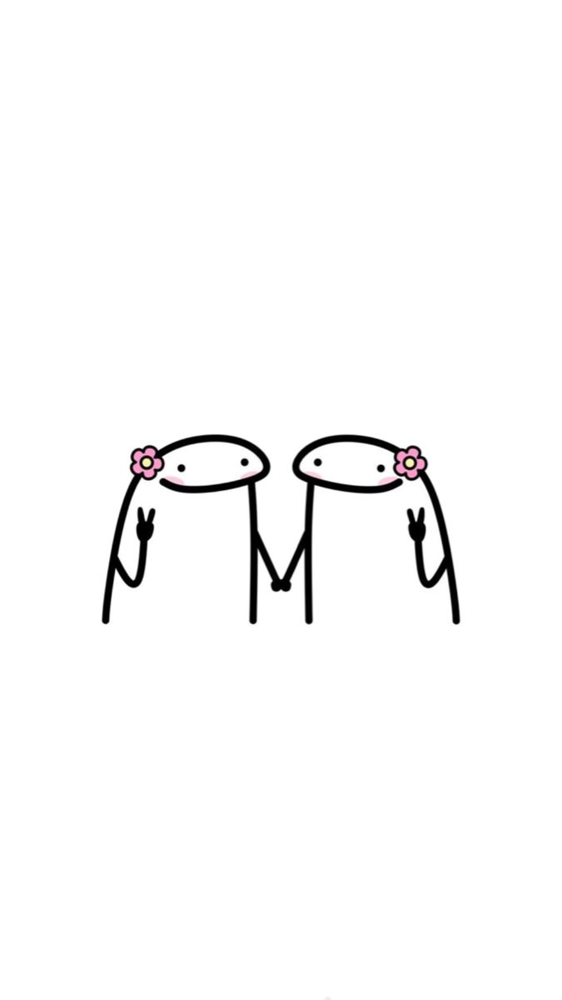
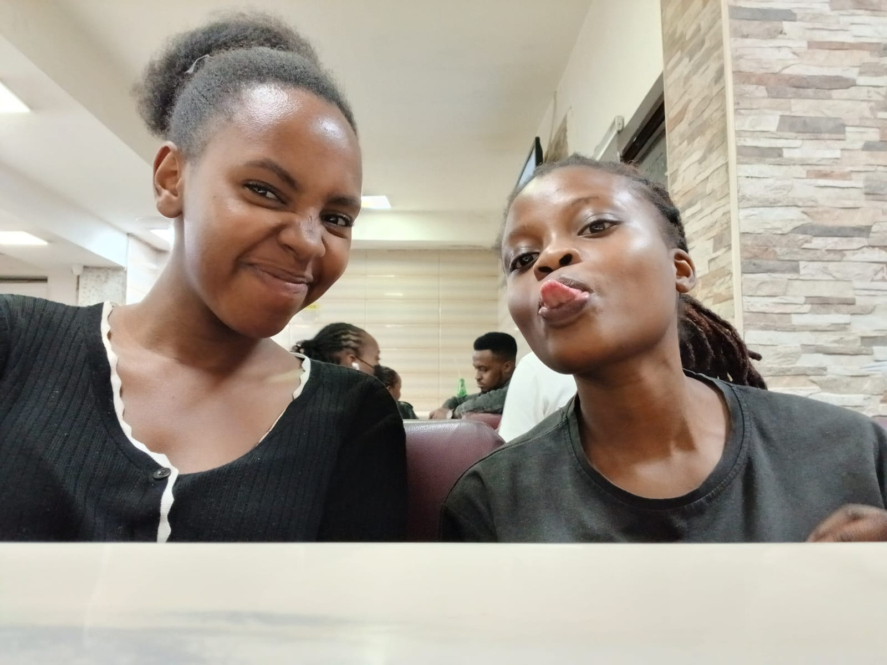
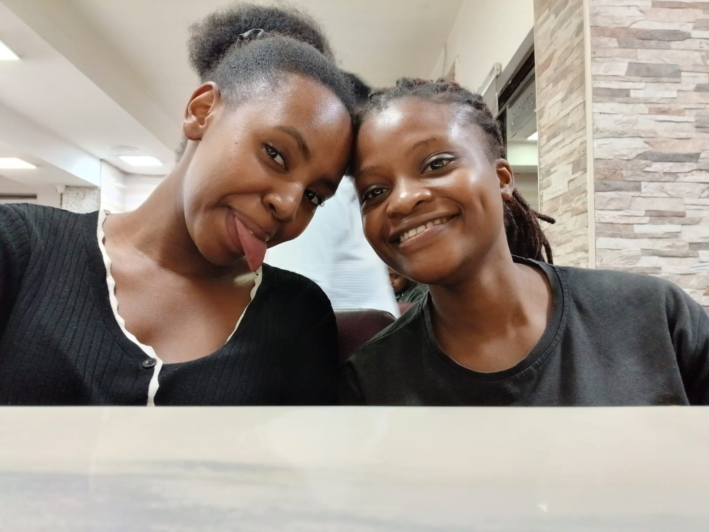
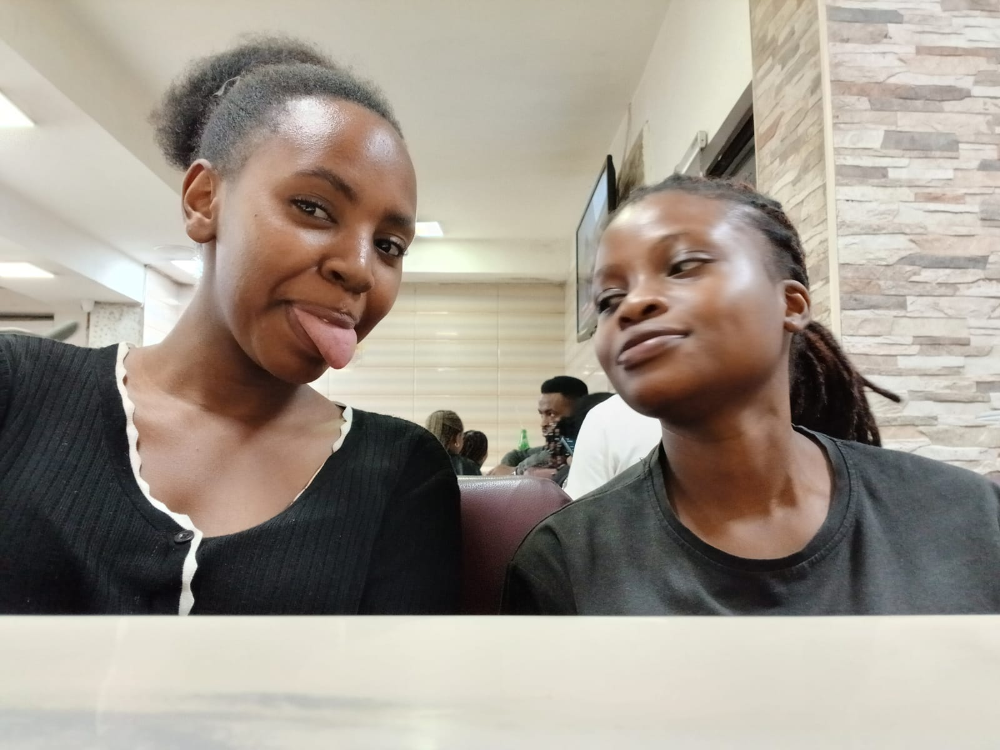

Just Us
A little scrapbook for my princess.

"Some people become memories. You became part of my story."
How It All Started
We met back in high school. Rose seemed scary at first, i was genuinly scared of her...
I realied i liked you much more than i should have.
Our relationship officially started. The best and the most scary night ever.
Our Memories

us just existing.

us being all cute.

me totally in love with my girl❤️
Things I Love About You
Tap a heart to remember...
Things You Don't Know You Do
"You make me want to become better in all aspects fr."
"You challenge me without even knowing it."
"You make me want to try new things, not the snake thing though"
"You make me happy."
"You constantly show me that being in touch with my emotions is not that bad."
About Rose
- Intelligent: you always want to know more,you ask questions and that is what makes one intelligent.
- Smart: you have a brilliant mind. i will keep on telling you that until you believe it.
- Beautiful: You are Stunning inside and out.
- sensitive: you feel deeply and that makes you so aware of your feelings.
- Kind: you have a heart warmer than the sun.
Our Future
"my gorgeous human, I love you."
Time Together
Loading our time...
A Sealed Love Letter
My Dearest Rose,
some say time is jut a concept
it is all made up
to maybe keep us sane
becuse living in the unkown is scary
but with you,
time stops,
its essence becomes irrelevant
being insane does not sound that bad
your smile leads me
and like the lover that i am
I follow
and the rest becomes history
yours jane
Thank you for existing, you are my favourite person.
"No matter where life takes us, thank you for becoming one of the most beautiful parts of my story."
Love,
Jane ❤️